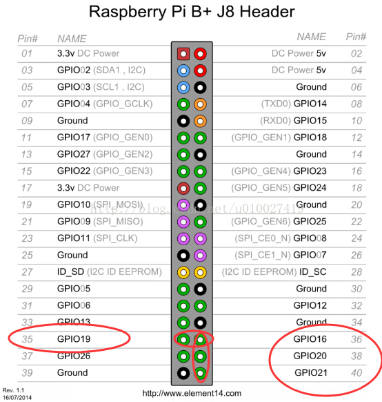

步进电机的驱动程序一样是让我费了好大力气才使他正常工作，在代码上走了不少弯路
树莓派不建议直接使用舵机，虽然舵机方便，而且仅需要一根信号线，不过需要舒服pwm信号，而新版的b+板子已经没有了物理的pwm信号口，只能用软件模拟，配置起来比较复杂，为了简便可以使用步进电机代替
使用步进电机需要步进电机和步进电机驱动板两样东西，我使用的电机和驱动板型号分别为28BYJ-48-5V和UL2003芯片的五线四相步进电机驱动板
首先说明步进电机的驱动原理 驱动板上有IN1, IN2, IN3, IN4四个接口，根据资料得知这四个接口依次设置为低电平就可以驱动，我们分别用杜邦线将GPIO 21（Pin 40），GPIO 20（Pin 38）, GPIO 16（Pin 36）, GPIO 19（Pin 35）和IN1，IN2，IN3，IN4一一相连。 
每次将四个GPIO端口按下表依次设置好电平后，可以sleep几十毫秒来控制转速 |序列 |GPIO 21 |GPIO 20| GPIO 16 |GPIO 19| |:--:|:--:|:--:|:--:|:--:| |0 |LOW| HIGH| HIGH |HIGH| |1 |HIGH |LOW| HIGH |HIGH| |2 |HIGH |HIGH |LOW |HIGH| |3 |HIGH |HIGH |HIGH |LOW| |4 |LOW |HIGH |HIGH |HIGH|
示例代码：
#!/usr/bin/python
#coding: utf8
import RPi.GPIO as GPIO
import time
import sys
from array import *
GPIO.setwarnings(False)
GPIO.setmode(GPIO.BOARD)
steps = int(sys.argv[1]);
clockwise = int(sys.argv[2]);
arr = [0,1,2,3];
if clockwise!=1:
arr = [3,2,1,0];
ports = [40,38,36,35] # GPIO 21（Pin 40） GPIO 20（Pin 38） GPIO 16（Pin 36） GPIO 19（Pin 35）
for p in ports:
GPIO.setup(p,GPIO.OUT)
for x in range(0,steps):
for j in arr:
time.sleep(0.01)
for i in range(0,4):
if i == j:
GPIO.output(ports[i],True)
else:
GPIO.output(ports[i],False)
执行python motor.py 90 0 可以顺时针转动大约80度。
执行 python motor.py 90 1 则可逆时针转动大约80度。
如果看到步进电机动了，至少说明他工作了，，，我之前就是感觉到有信号输入但是却死活不动。。。
参考原文：http://hugozhu.myalert.info/2013/03/16/03-16-use-raspberry-pi-control-step-motor-rotate-webcam.html （网上各种资料各种转载，一定要找原版看，要不然可能会格式不正确或者缺少好多东西，我之前就是参考了转载的源码走了不少的弯路！）
Comments
comments powered by Disqus